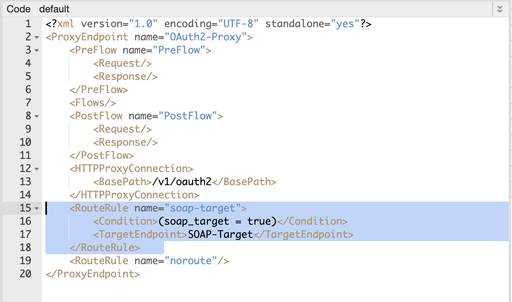
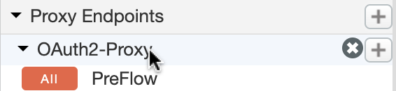
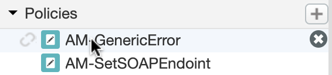
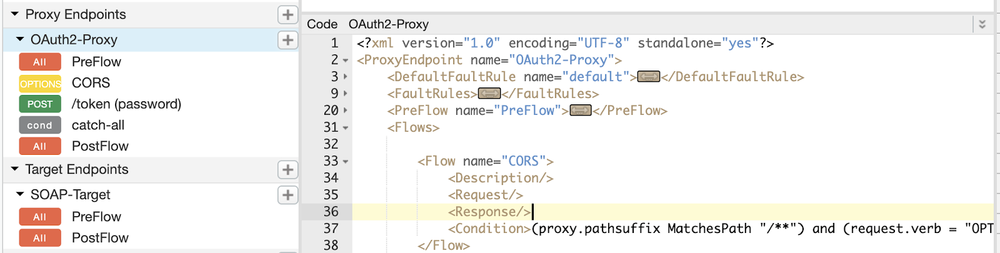

Throughout this lab, you will be using an Apigee Hybrid Kubernetes cluster named "hybrid-cluster"
- As part of the lab startup, Qwiklabs will automatically provision a GKE cluster for you. This process takes around five minutes. Once the cluster has been created, you should see this in your GKE clusters:

- After cluster creation, Qwiklabs will deploy Apigee Hybrid to this new GKE cluster. This process takes around 10 minutes. Once this deployment completes, you should see this for the
Workloadsof the "hybrid-cluster":

- Once Apigee Hybrid has been fully deployed, you should be able to access the Apigee UI by going to: https://apigee.google.com

- ➡️ This symbol denotes an explicit instruction that you should follow.
${ENVIRONMENT_VARIABLE}- This is an environment variable you should set.
Throughout this lab there will be instructions where you have to copy+paste text, and run commands. The text may include environment variables. It's recommended that you run the commands from a terminal within the lab-startup VM provided in the GCP project.

This VM comes preinstalled with all the tools you will need to use throughout the lab. (e.g. kubectl, gcloud, jq, etc). This VM also has an environment (lab.env) file located in your student home directory.
Use the following command to set up the environment file.
source ~/lab.envMost environment variables used throughout the lab should already be part of the lab.env file. If a command uses an environment variable that is not part of lab.env, it will be explicitly called out with a shell export statement before the command.
In the previous lab you created a mock API Proxy for OurBank verification service. You packaged and published this API Proxy to a developer portal where OurBank's retail partners could try it out. Their feedback was very positive! Now they want to move ahead and actually use the real verification service from OurBank.
In order to wire-up your mock API Proxy to the real SOAP service backed, you will need to first figure out how to properly protect the external RESTful interface you created.
In the previous lab, you used API Key verification. This was totally fine for the initial pass. You had to get something out quickly for the partners to try out. Now, things are getting more serious. In this lab you are going to learn more about how the existing SOAP service works, then you are going to implement OAuth 2.0 Password grant.
Let's test SOAP service that will serve as the main endpoint throughout the lab. You will be using cURL to make HTTP requests to the SOAP service. This will help you familiarize with the service.
➡️ Take a look at the WSDL file over at:
http://soap.${PROJECT}.apigeelabs.com/transactions?wsdl
Note that the backend SOAP service supports the following operations:
- Login
- VerifyCard
- VerifyAddress
VerifyCard and VerifyAddress are the main operations. They are protected. You need an authorization token to invoke these operations. You can use the Login operation to get an authorization token.
Let's test the Login operation from the SOAP service.
This operation behaves almost like an HTTP Basic Authorization endpoint. The input is a username and password. The output is an authorization token.
Here is an example of what the SOAP Envelope looks like for the Login operation.
<soapenv:Envelope xmlns:soapenv="http://schemas.xmlsoap.org/soap/envelope/" xmlns:tran="http://ourbank.apigeedemo.com/transactions.wsdl">
<soapenv:Header/>
<soapenv:Body>
<tran:LoginRequest>
<username>USERNAME</username>
<password>PASSWORD</password>
</tran:LoginRequest>
</soapenv:Body>
</soapenv:Envelope>➡️ Use the cURL command below to get a token
curl -X POST "http://soap.${PROJECT}.apigeelabs.com/transactions" \
-H 'Accept-Encoding: gzip,deflate' \
-H 'Content-Type: text/xml;charset=UTF-8' \
-H 'SOAPAction: "http://ourbank.apigeedemo.com/Login"' \
-d '
<soapenv:Envelope xmlns:soapenv="http://schemas.xmlsoap.org/soap/envelope/" xmlns:tran="http://ourbank.apigeedemo.com/transactions.wsdl">
<soapenv:Header/>
<soapenv:Body>
<tran:LoginRequest>
<username>user1@ourbank.com</username>
<password>SuperSecret123!</password>
</tran:LoginRequest>
</soapenv:Body>
</soapenv:Envelope>' | xmlformat
The response should look like this:
<?xml version="1.0" encoding="utf-8"?>
<soap:Envelope xmlns:soap="http://schemas.xmlsoap.org/soap/envelope/" xmlns:tns="http://ourbank.apigeedemo.com/transactions.wsdl" xmlns:xsd1="http://ourbank.apigeedemo.com/transactions.wsdl">
<soap:Body>
<xsd1:LoginResponse xmlns:xsd1="http://ourbank.apigeedemo.com/transactions.wsdl">
<valid>true</valid>
<token>AUTHORIZATION_TOKEN</token>
</xsd1:LoginResponse>
</soap:Body>
</soap:Envelope>➡️ Copy the authorization token from the response
Next, let's use the authorization token from the previous exercise to invoke the VerifyCard operation.
➡️Use the cURL command below to invoke the VerifyCard operation.
export AUTHORIZATION_TOKEN='fill in authorization token'curl -X POST "http://soap.${PROJECT}.apigeelabs.com/transactions" \
-H 'Accept-Encoding: gzip,deflate' \
-H 'Content-Type: text/xml;charset=UTF-8' \
-H 'SOAPAction: "http://ourbank.apigeedemo.com/VerifyCardRequest"' \
-d "$(cat << EOF
<soapenv:Envelope xmlns:soapenv="http://schemas.xmlsoap.org/soap/envelope/" xmlns:tran="http://ourbank.apigeedemo.com/transactions.wsdl">
<soapenv:Header>
<tran:Token>${AUTHORIZATION_TOKEN}</tran:Token>
</soapenv:Header>
<soapenv:Body>
<tran:VerifyCardRequest>
<CardNumber>357009350083861</CardNumber>
<CardVerificationValue>453</CardVerificationValue>
<CardExpiration>02/2025</CardExpiration>
</tran:VerifyCardRequest>
</soapenv:Body>
</soapenv:Envelope>
EOF
)" | xmlformatThe response should look like this:
<?xml version="1.0" encoding="utf-8"?>
<soap:Envelope xmlns:soap="http://schemas.xmlsoap.org/soap/envelope/" xmlns:tns="http://ourbank.apigeedemo.com/transactions.wsdl" xmlns:xsd1="http://ourbank.apigeedemo.com/transactions.wsdl">
<soap:Body>
<xsd1:VerifyCardResponse xmlns:xsd1="http://ourbank.apigeedemo.com/transactions.wsdl">
<valid>true</valid>
<message>The input credit card is valid</message>
</xsd1:VerifyCardResponse>
</soap:Body>
</soap:Envelope>Alright, so you've seen how the verification service works. In the world of SOAP APIs this one is not that so bad. For the purposes of this lab, the SOAP verification service has been kept simple. But, the unfortunate reality is that most SOAP services in the wild are messy and difficult to work with.
Before you embark on the main REST to SOAP transformation, let's figure out how to handle the new security mechanism.
In this exercise you are going to implement the OAuth 2.0 "Resource Owner Password Grant" as a facade on top of the existing Login operation.
Using the password grant, you will be able to authorize both the client app and the end-user. Apigee will be responsible for authorizing the client app. The SOAP service will be responsible for authorizing the end-user. From the client app's point of view it will look as if Apigee is doing all the work.
The sequence diagram below explains how this would work:
In this step you are going to create a Kubernetes secret to store the metadata for the SOAP service. The secret will have a properties file called soap_service.properties. Let's do that
➡️ Use the following command to create the file:
cat << EOF > soap_service.properties
endpoint: http://soap.${PROJECT}.apigeelabs.com
EOFThe initial canary split is set so that 50% of the traffic goes to the REST backend.
➡️ Next, use gcloud to retrieve the credentials to the Apigee Kubernetes cluster.
gcloud container clusters get-credentials hybrid-cluster --zone ${ZONE}➡️ Now, use kubectl to update the existing secret.
kubectl create secret generic ${PROJECT}-${ENV}-policy-secret \
--dry-run=client \
--save-config \
--namespace apigee \
--from-file=./soap_service.properties \
--output yaml | kubectl apply -f -Let's create the new API Proxy where you will implement the OAuth facade.
➡️ Navigate to Develop > API Proxies
➡️ Click on the button (top right)
➡️ Select on the No Target option
➡️ Use the following values to create the API Proxy
Name:
ourbank-oauth-v1Base path:
/v1/oauth2➡️ Keep clicking the until you reach the last dialog titled Summary
➡️ Select the test environment
➡️ Click on the button
Next, let's add the new proxy to the API Product from the previous lab.
➡️ Navigate to Publish > API Products
➡️ Click on the "OurBank Verification API" product from the list
➡️ Click on the (edit) button (top right)
➡️ Click on the button within the API Resources section
➡️ Select the "ourbank-oauth-v1" API Proxy from the list
➡️ Click on the button
Now, let's add a Target Endpoint to point to the SOAP service.
➡️ Navigate to Develop > API Proxies
➡️ Click on the "ourbank-oauth-v1" API Proxy from the list
➡️ Click on the Develop tab (top right)
➡️ Click on the plus button next to Target Endpoints to create a new target endpoint.
➡️Use the following values in the New Target Endpoint dialog
Name:
SOAP-TargetHTTP Target:
https://example.com➡️ Click on
Next, let's add a policy to set Target Endpoint URL to point to the SOAP service endpoint.
➡️ Select the Preflow of the new "SOAP-Target" endpoint
➡️ Click on the button (within the path) to add a new policy.
➡️ Select Assign Message from the policy palette.
➡️ Enter this value for both the policy Name and Display Name
AM-SetSOAPEndoint➡️ Click on
➡️ Click on the new policy
➡️ Replace the default contents of the policy with the XML below:
<?xml version="1.0" encoding="UTF-8" standalone="yes"?>
<AssignMessage async="false" continueOnError="false" enabled="true" name="AM-SetSOAPEndoint">
<DisplayName>AM-SetSOAPEndoint</DisplayName>
<Properties/>
<AssignVariable>
<Name>target.url</Name>
<Template>{private.secret.soap_service.properties.endpoint}/transactions</Template>
</AssignVariable>
<IgnoreUnresolvedVariables>true</IgnoreUnresolvedVariables>
</AssignMessage>
This policy retrieves the endpoint property from the Kubernetes secret you created earlier, and it assigns it as the URL for the target.
➡️ Save your progress by clicking on the button
Let's add a RouteRule for directing traffic to the new "SOAP-Target" endpoint. While at it, let's also rename the proxy endpoint to something more fitting.
➡️ Click on the "default" Proxy Endpoint to load the XML into the code window
➡️ Change the name attribute of the ProxyEndpoint element to:
OAuth2-ProxyNow, let's add the RouteRule.
➡️ Scroll to the bottom of the proxy XML, until you find the existing RouteRule.
➡️ Add the following XML as a sibling directly above the existing RouteRule.
<RouteRule name="soap-target">
<Condition>(soap_target = true)</Condition>
<TargetEndpoint>SOAP-Target</TargetEndpoint>
</RouteRule>
➡️ Save your progress by clicking on the button
The end-result should look like this:

Next, let's add a couple of policies to the Proxy Endpoint Preflow for parsing the extracting and parsing the common fields of an OAuth token request.
➡️ Click on the Preflow of the "OAuth2-Proxy" endpoint.
➡️ Click on the button (within the path) to add a new policy.
➡️ Select Extract Variables from the policy palette.
➡️ Enter this value for both the policy Name and Display Name
EV-ProcessRequestData➡️ Click on
➡️ Click on the new policy
➡️ Replace the default contents of the policy with the XML below:
<?xml version="1.0" encoding="UTF-8" standalone="yes"?>
<ExtractVariables async="false" continueOnError="false" enabled="true" name="EV-ProcessRequestData">
<DisplayName>EV-ProcessRequestData</DisplayName>
<!-- Grant type could be either in Query or Form Param -->
<QueryParam name="grant_type">
<Pattern>{req_grant_type}</Pattern>
</QueryParam>
<FormParam name="grant_type">
<Pattern>{req_grant_type}</Pattern>
</FormParam>
<!-- Response type could be either in Query or Form Param -->
<QueryParam name="response_type">
<Pattern>{req_response_type}</Pattern>
</QueryParam>
<FormParam name="response_type">
<Pattern>{req_response_type}</Pattern>
</FormParam>
<Header name="content-type">
<Pattern>{req_content_type}</Pattern>
</Header>
<FormParam name="client_id">
<Pattern>{req_client_id}</Pattern>
</FormParam>
<FormParam name="client_secret">
<Pattern>{req_client_secret}</Pattern>
</FormParam>
<FormParam name="username">
<Pattern>{req_username}</Pattern>
</FormParam>
<FormParam name="password">
<Pattern>{req_password}</Pattern>
</FormParam>
<QueryParam name="response_type">
<Pattern>{req_response_type}</Pattern>
</QueryParam>
<QueryParam name="client_id">
<Pattern>{req_client_id}</Pattern>
</QueryParam>
<QueryParam name="redirect_uri">
<Pattern>{req_redirect_uri}</Pattern>
</QueryParam>
<QueryParam name="state">
<Pattern>{req_state}</Pattern>
</QueryParam>
<FormParam name="code">
<Pattern>{req_code}</Pattern>
</FormParam>
<IgnoreUnresolvedVariables>true</IgnoreUnresolvedVariables>
</ExtractVariables>➡️ Save your progress by clicking on the button
This policy will create new flow variables extracted from the common parameters passed in an OAuth 2.0 token request.
The one scenario it does not account for is if the client_id and client_secret are passed in the HTTP Authorization header. For that, let's use the decode operation of Basic Auth policy.
➡️ Click on the button (within the path) to add a new policy.
➡️ Select Basic Authentication from the policy palette.
➡️ Enter this value for both the policy Name and Display Name
BA-GetCreds➡️ Click on
➡️ Click on the new policy
➡️ Replace the default contents of the policy with the XML below:
<?xml version="1.0" encoding="UTF-8" standalone="yes"?>
<BasicAuthentication async="false" continueOnError="false" enabled="true" name="BA-GetCreds">
<DisplayName>BA-GetCreds</DisplayName>
<Operation>Decode</Operation>
<User ref="req_client_id"/>
<Password ref="req_client_secret"/>
<Source>request.header.Authorization</Source>
<IgnoreUnresolvedVariables>false</IgnoreUnresolvedVariables>
</BasicAuthentication>➡️ Save your progress by clicking on the button
Let's also make this poly conditional, so that it only runs if the Authorization header is present.
➡️ Click on the "OAuth2-Proxy" endpoint

➡️ Scroll to locate the newly added policy step
➡️ Add the following condition XML element directly below the step name.
<Condition>request.header.Authorization != null</Condition>➡️ Save your progress by clicking on the button
The result should look like this:
The end state of this step should look like this:
Now, let's create the conditional flow in the "OAuth2-Proxy" endpoint for processing the /token requests.
➡️ Click on the "OAuth2-Proxy" endpoint to load the proxy XML into the code window
➡️Scroll to locate the existing empty <Flows/> XML element.
➡️ Remove the empty <Flows/> XML element
➡️ Add the following Flows element
<Flows>
<Flow name="/token (password)">
<Request/>
<Response/>
<Condition>(proxy.pathsuffix MatchesPath "/token") and (request.verb = "POST") and (req_grant_type = "password") and (req_content_type = "application/x-www-form-urlencoded")</Condition>
</Flow>
</Flows>➡️ Save your progress by clicking on the button
The end result should look like this:
Sometimes the Apigee UI does not fully detect the changes made directly in the Code window. When this happens, you may see something like this:
If this happens to you, save the changes and reload the page. That should fix it.
Now, let's add some logic to do basic error handling.
The approach we are going to use for error handling is that we will use the Raise Fault policy whenever we encounter a logical error. For example, if you are expecting a certain field to be present, but it's not, you will raise a fault conditionally. Let's refer to these as custom-fault(s) for the rest of the lab.
All custom faults will use this format:
{
"valid": false,
"message": "Some error message"
}But, what if there is an unexpected error? For example, an Apigee policy could fail unexpectedly due to a bug in the proxy logic. For consistency, you should format these error messages the same way. To accomplish this, you will use Apigee's Fault Rules.
There are many ways to do error handling in Apigee. This is only one possible solution. It's simple but effective. Let's implement it.
First, let's add a catch-all conditional flow to the "OAuth2-Proxy" endpoint. This flow will take care of sending an error message to the client whenever there is a request which does not match any of the existing flows.
➡️ Click on the "OAuth2-Proxy" endpoint to load the proxy XML into the code window
➡️ Scroll to locate the existing /token (password) conditional flow.
➡️ Add the following flow as a sibling directly below it
<Flow name="catch-all">
<Request/>
<Response/>
<Description>Requests that arrive here, should error out</Description>
<Condition>true</Condition>
</Flow>
➡️ Save your progress by clicking on the button
Next, let's add a Raise Fault policy in this new flow to reply with a generic HTTP 400 error message.
➡️ Click on the newly added "catch-all" flow
➡️ Click on the button (within the path) to add a new policy.
➡️ Enter this value for both the policy Name and Display Name
RF-BadRequest➡️ Click on
➡️ Click on the new policy
➡️ Replace the contents of the policy with the following XML code:
<?xml version="1.0" encoding="UTF-8" standalone="yes"?>
<RaiseFault async="false" continueOnError="false" enabled="true" name="RF-BadRequest">
<DisplayName>RF-BadRequest</DisplayName>
<Properties/>
<FaultResponse>
<AssignVariable>
<Name>custom_fault</Name>
<Value>true</Value>
</AssignVariable>
<Set>
<Headers>
<Header name="Content-Type">application/json</Header>
</Headers>
<Payload contentType="application/json">
{
"valid": false,
"message": "Unknown authorization request"
}
</Payload>
<StatusCode>400</StatusCode>
<ReasonPhrase>Bad Request</ReasonPhrase>
</Set>
</FaultResponse>
<IgnoreUnresolvedVariables>true</IgnoreUnresolvedVariables>
</RaiseFault>➡️ Save your progress by clicking on the button
Note the Assign Message policy nested within the Raise Fault. It is adding a new flow variable
custom_fault=trueThat's how you are going to distinguish later between faults raised by the Apigee itself vs faults raised explicitly within your API Proxy logic.
Next, let's create an Assign Message policy to reformat faults raised by Apigee.
➡️ Click on the plus button next to the Policies list to add a new policy
➡️ Select Assign Message from the policy palette.
➡️ Enter this value for both the policy Name and Display Name
AM-GenericError➡️ Click on
➡️ Click on the newly added policy from the Policies list

➡️ Replace the default contents of the policy with the XML below:
<?xml version="1.0" encoding="UTF-8" standalone="yes"?>
<AssignMessage async="false" continueOnError="false" enabled="true" name="AM-GenericError">
<DisplayName>AM-GenericError</DisplayName>
<Properties/>
<Set>
<Headers>
<Header name="Content-Type">application/json</Header>
</Headers>
<StatusCode>500</StatusCode>
<Payload>
{
"valid": false,
"message": "An internal server error has occurred. {error.message}"
}
</Payload>
</Set>
<IgnoreUnresolvedVariables>true</IgnoreUnresolvedVariables>
<AssignTo createNew="true" transport="http" type="response">error</AssignTo>
</AssignMessage>➡️ Save your progress by clicking on the button
Next, let's add the main fault handling logic. Fault Rules behave in a similar way to Flows:
- They are conditional
- They get evaluated in-order *
- The first
Fault Rulewith a condition that evaluates totruegets executed - Once a
Fault Ruleexecutes, the remainingFault Rulesare skipped
Let's start with the Proxy Endpoint endpoint.
➡️ Click on the "OAuth2-Proxy" endpoint
➡️ Add the following FaultRules as a child of the ProxyEndpoint XML (at the top)
<FaultRules>
<FaultRule name="catch-all">
<Step>
<Name>AM-GenericError</Name>
</Step>
</FaultRule>
<FaultRule name="custom_fault">
<!-- do nothing -->
<Condition>custom_fault = true</Condition>
</FaultRule>
</FaultRules>➡️ If there is already an empty <FaultRules/> element, remove it.
➡️ Save your progress by clicking on the button
The end-result should look like this:
Finally, let's add the same FaultRules (but in reverse order) to the Target Endpoint.
➡️ Click on the "SOAP-Target" endpoint
➡️ Add the following FaultRules as a child of the TargetEndpoint XML (at the top)
<FaultRules>
<FaultRule name="custom_fault">
<!-- do nothing -->
<Condition>custom_fault = true</Condition>
</FaultRule>
<FaultRule name="catch-all">
<Step>
<Name>AM-GenericError</Name>
</Step>
</FaultRule>
</FaultRules>➡️ If there is already an empty <FaultRules/> element, remove it.
➡️ Save your progress by clicking on the button
The end-result should look like this:

Now, let's add a few policies to support CORS. This will be needed when you use the developer portal to request a token.
For proper CORS support, there are a couple of rules you should keep in mind:
In terms of Apigee, this means that:
- Given Rule 1, you will need to inject CORS response headers for both successful and non successful responses.
- Given Rule 2, you will need a dedicated OPTIONS flow that is not subject to security checks.
Let's take care of these scenarios.
First, let's add a policy in the Proxy Endpoint to inject CORS headers. This policy will add CORS headers to any response message that exits normally (regardless of HTTP status code). This takes care of both positive and negative responses.
➡️ Click on the Postflow of the "OAuth2-Proxy" endpoint.
➡️ Click on the button (within the path) to add a new policy.
➡️ Select Assign Message from the policy palette.
➡️ Enter this value for both the policy Name and Display Name
AM-CORS-Headers➡️ Click on
➡️ Click on the new policy
➡️ Replace the contents of the policy with the following XML code:
<?xml version="1.0" encoding="UTF-8" standalone="yes"?>
<AssignMessage async="false" continueOnError="false" enabled="true" name="AM-CORS-Headers">
<DisplayName>AM-CORS-Headers</DisplayName>
<Properties/>
<Set>
<Headers>
<Header name="Access-Control-Allow-Origin">*</Header>
<Header name="Access-Control-Allow-Methods">POST,GET,PUT,DELETE,OPTIONS</Header>
<Header name="Access-Control-Allow-Headers">*,Authorization</Header>
</Headers>
</Set>
<IgnoreUnresolvedVariables>true</IgnoreUnresolvedVariables>
<AssignTo createNew="false" transport="http" type="request"/>
</AssignMessage>➡️ Save your progress by clicking on the button
Next, let's take care of responses that exit through the Fault flow. To do this, let's use a DefaultFaultRule. This will be needed for both the Proxy Endpoint and the Target Endpoint as they have separate Fault flows.
➡️ Click on the "OAuth2-Proxy" endpoint
➡️ Add the following DefaultFaultRule as a child of the ProxyEndpoint element (at the top)
<DefaultFaultRule name="default">
<Step>
<Name>AM-CORS-Headers</Name>
</Step>
<AlwaysEnforce>true</AlwaysEnforce>
</DefaultFaultRule>➡️ Save your progress by clicking on the button
The result should look like this:
Let's do the same now for the "SOAP-Target" endpoint.
➡️ Click on the "SOAP-Target" endpoint
➡️ Add the following DefaultFaultRule as a child of the TargetEndpoint element (at the top)
<DefaultFaultRule name="default">
<Step>
<Name>AM-CORS-Headers</Name>
</Step>
<AlwaysEnforce>true</AlwaysEnforce>
</DefaultFaultRule>➡️ Save your progress by clicking on the button
The result should look like this:
Finally, let's add the OPTIONS conditional flow to take care of CORS Preflight requests. We'll need an Assign Message policy in this flow to force the HTTP 200 status code.
➡️ Click on the "OAuth2-Proxy" endpoint to bring XML into the code window
➡️ Scroll to locate the existing /token (password) conditional flow
➡️ Add the following conditional conditional flow as sibling above the /token (password) flow.
<Flow name="CORS">
<Description/>
<Request/>
<Response/>
<Condition>(proxy.pathsuffix MatchesPath "/**") and (request.verb = "OPTIONS")</Condition>
</Flow>➡️ Save your progress by clicking on the button
The end result should look like this:

Now, let's add the Assign Message policy to set the HTTP 200 status code.
➡️ Click on the newly added CORS conditional flow.
➡️ Click on the button (within the path) to add a new policy.
➡️ Select Assign Message from the policy palette.
➡️ Enter this value for both the policy Name and Display Name
AM-CORS-OPTIONS➡️ Click on
➡️ Click on the new policy
➡️ Replace the default contents of the policy with the XML below:
<?xml version="1.0" encoding="UTF-8" standalone="yes"?>
<AssignMessage async="false" continueOnError="false" enabled="true" name="AM-CORS-OPTIONS">
<DisplayName>AM-CORS-OPTIONS</DisplayName>
<Properties/>
<Set>
<Headers>
<Header name="Access-Control-Allow-Origin">*</Header>
<Header name="Access-Control-Allow-Methods">POST,GET,PUT,DELETE,OPTIONS</Header>
<Header name="Access-Control-Allow-Headers">*,Authorization</Header>
</Headers>
<StatusCode>200</StatusCode>
</Set>
<IgnoreUnresolvedVariables>true</IgnoreUnresolvedVariables>
<AssignTo createNew="false" transport="http" type="request"/>
</AssignMessage>➡️ Save your progress by clicking on the button
Now, let's add the policies necessary to process the incoming OAuth request and then send the Login SOAP Request.
By the end of this step, the entire "Request Rath" for the /token (password) flow will look like this:
Let's implement it.
Before calling the Login operation, you need to verify the client app's credentials. Let's do it in two steps. First, let's verify the client_id.
Request Path: Policy 1: Verify API Key
➡️ Click on /token (password) conditional flow.
➡️ Click on the button (within the path) to add a new policy.
➡️ Select Verify API Key from the policy palette.
➡️ Enter this value for both the policy Name and Display Name
VAK-CheckClientId➡️ Click on
➡️ Click on the new policy
➡️ Replace the default contents of the policy with the XML below:
<?xml version="1.0" encoding="UTF-8" standalone="yes"?>
<VerifyAPIKey async="false" continueOnError="false" enabled="true" name="VAK-CheckClientId">
<DisplayName>VAK-CheckClientId</DisplayName>
<Properties/>
<APIKey ref="req_client_id"/>
</VerifyAPIKey>➡️ Save your progress by clicking on the button
Once the client_id has been verified, the Verify API Key policy populates a set of flow variables prefixed by: "verifyapikey.VAK-CheckClientId".
One of these new flow variables is the client_secret:
verifyapikey.VAK-CheckClientId.client_secretYou can verify the incoming request's client_secret by comparing it with the value of this new flow variable.
To accomplish this, let's add a RaiseFault policy that executes conditionally (the fault should be raised only if the two values do not match)
Request Path: Policy 2: Verify API Secret
➡️ Click on the button (within the path) to add a new policy.
➡️ Select Raise Fault from the policy palette
➡️ Enter this value for both the policy Name and Display Name
RF-BadCredential➡️ Click on
➡️ Click on the new policy
➡️ Replace the contents of the policy with the following XML code:
<?xml version="1.0" encoding="UTF-8" standalone="yes"?>
<RaiseFault async="false" continueOnError="false" enabled="true" name="RF-BadCredential">
<DisplayName>RF-BadCredential</DisplayName>
<Properties/>
<FaultResponse>
<AssignVariable>
<Name>custom_fault</Name>
<Value>true</Value>
</AssignVariable>
<Set>
<Headers>
<Header name="Content-Type">application/json</Header>
</Headers>
<Payload>
{
"valid": false,
"message": "Client credentials not valid"
}
</Payload>
<StatusCode>401</StatusCode>
<ReasonPhrase>Unauthorized</ReasonPhrase>
</Set>
</FaultResponse>
<IgnoreUnresolvedVariables>true</IgnoreUnresolvedVariables>
</RaiseFault>➡️ Save your progress by clicking on the button
Now, let's add the condition to this policy.
➡️ Click on the "OAuth2-Proxy" endpoint
➡️ Scroll to locate the newly added policy step
➡️ Add the following condition XML element directly below the step name.
<Condition>verifyapikey.VAK-CheckClientId.client_secret != req_client_secret</Condition>➡️ Save your progress by clicking on the button
The result should look like this:
Request Path: Policy 3: Build SOAP Login Request
Finally, let's add an Assign Message policy to build the SOAP Envelope to invoke Login operation.
➡️ Click on /token (password) conditional flow.
➡️ Click on the button (within the path) to add a new policy.
➡️ Select Assign Message from the policy palette.
➡️ Enter this value for both the policy Name and Display Name
AM-BuildSOAPLoginReq➡️ Click on
➡️ Click on the new policy
➡️ Replace the default contents of the policy with the XML below:
<?xml version="1.0" encoding="UTF-8" standalone="yes"?>
<AssignMessage async="false" continueOnError="false" enabled="true" name="AM-BuildSOAPLoginReq">
<DisplayName>AM-BuildSOAPLoginReq</DisplayName>
<Properties/>
<AssignVariable>
<Name>soap_target</Name>
<Value>true</Value>
</AssignVariable>
<Set>
<Headers>
<Header name="SOAPAction">"http://ourbank.apigeedemo.com/Login"</Header>
<Header name="Content-Type">text/xml;charset=UTF-8</Header>
</Headers>
<Payload>
<soapenv:Envelope xmlns:soapenv="http://schemas.xmlsoap.org/soap/envelope/" xmlns:tran="http://ourbank.apigeedemo.com/transactions.wsdl">
<soapenv:Header/>
<soapenv:Body>
<tran:LoginRequest>
<username>{request.formparam.username}</username>
<password>{request.formparam.password}</password>
</tran:LoginRequest>
</soapenv:Body>
</soapenv:Envelope>
</Payload>
</Set>
<IgnoreUnresolvedVariables>true</IgnoreUnresolvedVariables>
<AssignTo createNew="true" transport="http" type="request"/>
</AssignMessage>➡️ Save your progress by clicking on the button
This is it! You are done with the request path. Pad yourself in the back, you are doing so well :-)
Now, let's add the policies necessary to process the SOAP service's response and then generate Apigee's OAuth token.
By the end of this step, the /token (password) flow Response Path should look like this:
Here you are going to process the response form the SOAP service. One tricky thing to consider is that the SOAP service always returns HTTP 200 regardless if there was an error or not. The only difference will be in the response payload.
A successful response will look like this:
<soap:Envelope xmlns:soap="http://schemas.xmlsoap.org/soap/envelope/" xmlns:tns="http://ourbank.apigeedemo.com/transactions.wsdl" xmlns:xsd1="http://ourbank.apigeedemo.com/transactions.wsdl">
<soap:Body>
<xsd1:LoginResponse>
<valid>true</valid>
<message>Success message</message>
</xsd1:LoginResponse>
</soap:Body>
</soap:Envelope>A non-successful response will look like this:
<soap:Envelope xmlns:soap="http://schemas.xmlsoap.org/soap/envelope/" xmlns:tns="http://ourbank.apigeedemo.com/transactions.wsdl" xmlns:xsd1="http://ourbank.apigeedemo.com/transactions.wsdl">
<soap:Body>
<xsd1:LoginResponse>
<valid>false</valid>
<message>Some error message</message>
</xsd1:LoginResponse>
</soap:Body>
</soap:Envelope>This is not even the proper way to respond with an error/fault in SOAP. But, you have to work with this mess as you cannot change the backed implementation.
Once you have processed the response (and checked for errors), you will generate an Apigee OAuth access_token, and send it to the client.
Let's start implementing the logic. First, let's convert the response from XML to JSON. That will make it simpler to process it.
Response Path: Policy 1: Transform XML to JSON
➡️ Click on the button (within the path) to add a new policy.
➡️ Select XML to JSON from the policy palette.
➡️ Enter this value for both the policy Name and Display Name
X2J-ConvertRes➡️ Click on
➡️ Click on the new policy
➡️ Replace the default contents of the policy with the XML below:
<?xml version="1.0" encoding="UTF-8" standalone="yes"?>
<XMLToJSON async="false" continueOnError="false" enabled="true" name="X2J-ConvertRes">
<DisplayName>X2J-ConvertRes</DisplayName>
<Properties/>
<Format>yahoo</Format>
<OutputVariable>response</OutputVariable>
<Source>response</Source>
</XMLToJSON>➡️ Save your progress by clicking on the button
Response Path: Policy 2: Parse Response
Now, let's use an Extract Variables policy to process the response. Technically, you did not have to convert it to JSON. The Extract Variables policy can also work with XML xpath expressions. But, who wants to use xpath ...
➡️ Click on the button (within the path) to add a new policy.
➡️ Select Extract Variables from the policy palette.
➡️ Enter this value for both the policy Name and Display Name
EV-ProcessResponse➡️ Click on
➡️ Click on the new policy
➡️ Replace the default contents of the policy with the XML below:
<?xml version="1.0" encoding="UTF-8" standalone="yes"?>
<ExtractVariables async="false" continueOnError="false" enabled="true" name="EV-ProcessResponse">
<DisplayName>EV-ProcessResponse</DisplayName>
<Properties/>
<IgnoreUnresolvedVariables>true</IgnoreUnresolvedVariables>
<JSONPayload>
<Variable name="soap_response_valid">
<JSONPath>$.Envelope.Body.LoginResponse.valid</JSONPath>
</Variable>
<Variable name="soap_response_message">
<JSONPath>$.Envelope.Body.LoginResponse.message</JSONPath>
</Variable>
<Variable name="soap_response_token">
<JSONPath>$.Envelope.Body.LoginResponse.token</JSONPath>
</Variable>
</JSONPayload>
<Source clearPayload="false">response.content</Source>
</ExtractVariables>➡️ Save your progress by clicking on the button
Response Path: Policy 3: Check Response for Errors
Next, let's do some error checking. If the "valid" field in the response is set to false, you should raise a fault. Let's do that.
➡️ Click on the button (within the path) to add a new policy.
➡️ Select Raise Fault from the policy palette
➡️ Enter this value for both the policy Name and Display Name
RF-NotAuthorized➡️ Click on
➡️ Click on the new policy
➡️ Replace the contents of the policy with the following XML code:
<?xml version="1.0" encoding="UTF-8" standalone="yes"?>
<RaiseFault async="false" continueOnError="false" enabled="true" name="RF-NotAuthorized">
<DisplayName>RF-NotAuthorized</DisplayName>
<Properties/>
<FaultResponse>
<AssignVariable>
<Name>custom_fault</Name>
<Value>true</Value>
</AssignVariable>
<Set>
<Headers>
<Header name="Content-Type">application/json</Header>
</Headers>
<Payload>
{
"valid": false,
"message": "{escapeJSON(soap_response_message)}"
}
</Payload>
<StatusCode>401</StatusCode>
<ReasonPhrase>Server Error</ReasonPhrase>
</Set>
</FaultResponse>
<IgnoreUnresolvedVariables>true</IgnoreUnresolvedVariables>
</RaiseFault>➡️ Save your progress by clicking on the button
Notice within the Payload field, the policy uses escapeJSON on the original response message. This is needed in case the original message contains double quotes.
Next, let's make the Raise Fault conditional so that it only executes when the soap_response_valid flow variable is set to false.
➡️ Click on the "OAuth2-Proxy" endpoint
➡️ Scroll to locate the newly added policy step
➡️ Add the following condition element directly above the step name.
<Condition>soap_response_valid = false</Condition>➡️ Save your progress by clicking on the button
The result should look like this:
This is all there is to do in terms for processing the response. Next, let's generate an OAuth token, and send it to the client.
Response Path: Policy 4: Restore Original Request Params
As you prepare to generate Apigee's OAuth 2.0 access_token, you have to restore the OAuth form parameters that the client app had originally passed in the request.
This is needed as the Apigee OAuth 2.0 policy expects to read parameters from the standard OAuth 2.0 form fields.
➡️ Click on the /token (password) conditional flow
➡️ Click on the button (within the path) to add a new policy.
➡️ Select Assign Message from the policy palette.
➡️ Enter this value for both the policy Name and Display Name
AM-AccessTokenPrepPasswordGrant➡️ Click on
➡️ Click on the new policy
➡️ Replace the contents of the policy with the following XML code:
<?xml version="1.0" encoding="UTF-8" standalone="yes"?>
<AssignMessage async="false" continueOnError="false" enabled="true" name="AM-AccessTokenPrepPasswordGrant">
<DisplayName>AM-AccessTokenPrepPasswordGrant</DisplayName>
<Properties/>
<AssignVariable>
<Name>request.formparam.client_id</Name>
<Ref>req_client_id</Ref>
</AssignVariable>
<AssignVariable>
<Name>request.formparam.client_secret</Name>
<Ref>req_client_secret</Ref>
</AssignVariable>
<AssignVariable>
<Name>request.formparam.grant_type</Name>
<Ref>req_grant_type</Ref>
</AssignVariable>
<AssignVariable>
<Name>request.formparam.username</Name>
<Ref>req_username</Ref>
</AssignVariable>
<AssignVariable>
<Name>request.formparam.password</Name>
<Value>secret</Value>
</AssignVariable>
<IgnoreUnresolvedVariables>true</IgnoreUnresolvedVariables>
</AssignMessage>➡️ Save your progress by clicking on the button
Response Path: Policy 5: Generate Access Token
Now, let's generate Apigee's own access_token. Also, let's store the external IdP's access_token as an attribute of Apigee's own access_token.
➡️ Click on the button (within the path) to add a new policy.
➡️ Select OAuth v2.0 from the policy palette.
➡️ Enter this value for both the policy Name and Display Name
OA-PasswordGenAccessToken➡️ Click on
➡️ Click on the new policy
➡️ Replace the contents of the policy with the following XML code:
<?xml version="1.0" encoding="UTF-8" standalone="yes"?>
<OAuthV2 async="false" continueOnError="false" enabled="true" name="OA-PasswordGenAccessToken">
<DisplayName>OA-PasswordGenAccessToken</DisplayName>
<Operation>GenerateAccessToken</Operation>
<!-- 6 hours -->
<ExpiresIn>21600000</ExpiresIn>
<!-- 30 days -->
<RefreshTokenExpiresIn>2592000000</RefreshTokenExpiresIn>
<SupportedGrantTypes>
<GrantType>password</GrantType>
</SupportedGrantTypes>
<Attributes>
<Attribute name="external_access_token" ref="soap_response_token" display="false"/>
</Attributes>
<GenerateResponse enabled="true"/>
<GenerateErrorResponse enabled="true"/>
</OAuthV2>➡️ Save your progress by clicking on the button
Response Path: Policy 6: Get OAuth Response Fields
The Apigee OAuth 2.0 policy does not generate a standards compliant OAuth 2.0 access_token response. Because of this, we'll need to reformat the response to include only the necessary fields.
➡️ Click on the button (within the path) to add a new policy.
➡️ Select Extract Variables from the policy palette.
➡️ Enter this value for both the policy Name and Display Name
EV-GetOAuthAuthVars➡️ Click on
➡️ Click on the new policy
➡️ Replace the default contents of the policy with the XML below:
<?xml version="1.0" encoding="UTF-8" standalone="yes"?>
<ExtractVariables async="false" continueOnError="false" enabled="true" name="EV-GetOAuthAuthVars">
<DisplayName>EV-GetOAuthAuthVars</DisplayName>
<Properties/>
<IgnoreUnresolvedVariables>true</IgnoreUnresolvedVariables>
<JSONPayload>
<Variable name="oauth_access_token">
<JSONPath>$.access_token</JSONPath>
</Variable>
<Variable name="oauth_access_token_expires_in">
<JSONPath>$.expires_in</JSONPath>
</Variable>
<Variable name="oauth_refresh_token">
<JSONPath>$.refresh_token</JSONPath>
</Variable>
<Variable name="oauth_refresh_token_expires_in">
<JSONPath>$.refresh_token_expires_in</JSONPath>
</Variable>
</JSONPayload>
<Source clearPayload="false">message.content</Source>
</ExtractVariables>➡️ Save your progress by clicking on the button
Response Path: Policy 6: Reformat Access Token Response
Finally, let's add an Assign Message policy to build the proper OAuth 2.0 access_token response.
➡️ Click on the button (within the path) to add a new policy.
➡️ Select Assign Message from the policy palette.
➡️ Enter this value for both the policy Name and Display Name
AM-TokenRes➡️ Click on
➡️ Click on the new policy
➡️ Replace the contents of the policy with the following XML code:
<?xml version="1.0" encoding="UTF-8" standalone="yes"?>
<AssignMessage async="false" continueOnError="false" enabled="true" name="AM-TokenRes">
<DisplayName>AM-TokenRes</DisplayName>
<Properties/>
<Set>
<Headers>
<Header name="Content-Type">application/json</Header>
</Headers>
<Payload>
{
"access_token":"{oauth_access_token}",
"token_type":"Bearer",
"expires_in":{oauth_access_token_expires_in},
"refresh_token":"{oauth_refresh_token}",
"refresh_token_expires_in":{oauth_refresh_token_expires_in}
}
</Payload>
</Set>
<IgnoreUnresolvedVariables>true</IgnoreUnresolvedVariables>
<AssignTo createNew="true" transport="http" type="response"/>
</AssignMessage>➡️ Save your progress by clicking on the button
Whoohoo! You made it this far. You should now have a working OAuth 2.0 API Proxy. Let's test it in the next step.
Let's deploy the proxy.
➡️ Navigate to the ourbank-oauth-v1 proxy, and click on the Develop tab.
➡️ Click on the button (on the top-right)
➡️ Click on the button to confirm.
➡️ Mouse over the spinning wheel.
➡️ Wait until, the deployment completes
Upon successful complete, you should see the following:
This is an optional step. If the deployment from the previous step fails, you will see an error like this:
The Apigee Hybrid UI currently does not fetch the specific error details. However, this information can be retrieved using the Apigee APIs.
➡️ Use the following curl command to retrieve the error details:
export ACCESS_TOKEN=$(gcloud auth print-access-token)
export REVISION=2curl -X GET https://apigee.googleapis.com/v1/organizations/${PROJECT}/environments/test/apis/ourbank-oauth-v1/revisions/${REVISION}/deployments \
-H "Authorization: Bearer ${ACCESS_TOKEN}" \
-H 'Accept: application/json' | jq(make sure to set the correct revision environment variable)
Here is a sample of what the response would look like:
{
"environment": "test",
"apiProxy": "ourbank-oauth-v1",
"revision": "2",
"deployStartTime": "1594004110753",
"pods": [
{
"podName": "apigee-runtime-qwiklabs-gcp-03-9409efafedd4-test-v120-gxd8f",
"appVersion": "self",
"deploymentStatusTime": "1594004850650",
"deploymentStatus": "error",
"statusCode": "500",
"statusCodeDetails": "Deployment Failed: keyvaluemap.service.keyvaluemap_name_invalid\nKeyValueMap name is invalid",
"deploymentTime": "1594004153587",
"podStatus": "active",
"podStatusTime": "1594004850650"
}
],
"basePath": "/"
}Once you've fixed the error described in the statusCodeDetails field, save a new revision of the API proxy, and re-deploy it.
Let's test the API proxy using cURL.
For this you will need both the client app's and the end-user's credentials. In the previous lab you already created an app. Let's use that app's credentials.
➡️ Navigate to Publish > Apps (on the left)
➡️ Click on the "ourbank-verification-app" from the list
➡️ Click on Show to reveal both the Key and Secret for the app
➡️Copy the Key and Secret to a text editor (you will use them next)
➡️ Run the following cURL command
export CLIENT_ID='fill in the app consumer key'
export CLIENT_SECRET='fill in the app consumer key'export ENDUSER_USERNAME='user1@ourbank.com'
export ENDUSER_PASSWORD='SuperSecret123!'curl -X POST "https://api.${PROJECT}.apigeelabs.com/v1/oauth2/token" \
-H 'Content-Type: application/x-www-form-urlencoded' \
--data "username=${ENDUSER_USERNAME}" \
--data "password=${ENDUSER_PASSWORD}" \
--data "client_id=${CLIENT_ID}" \
--data "client_secret=${CLIENT_SECRET}" \
--data "grant_type=password" | jq
Response should look like this:
{
"access_token": "ACCESS_TOKEN",
"token_type": "Bearer",
"expires_in": 21599,
"refresh_token": "REFRESH_TOKEN",
"refresh_token_expires_in": 2591999
}Hopefully it worked. If not, you will have some troubleshooting to do. The Apigee Trace tool it's super helpful for debugging API Proxy issues.